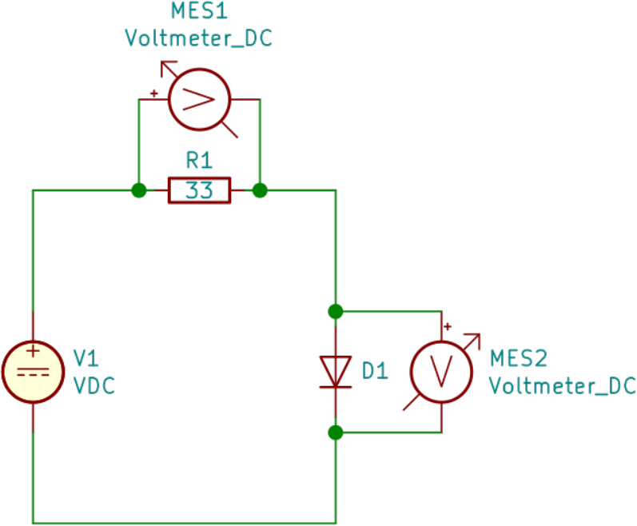

Halbleiter: Dioden
(Schwierigkeitsstufe i)
Aufgabe i.1: Zeitaufwand: 40 Minuten

Mit Hilfe der oben abgebildeten Schaltung wird die Kennlinie einer Diode aufgenommen.
a) |
Nennen und erklären Sie zwei Aufgaben, die der Widerstand R1 in der Schaltung erfüllt.
|
b) |
Geben Sie eine Formel an, mit welcher der Strom ID, der durch die Diode D1 fließt berechnet werden kann.
|
c) |
Wie berechnet sich die Gesamtspannung V1 aus den Messwerten der beiden Voltmeter?
|
|
Die rechts abgebildete Tabelle zeigt die Ergebnisse der ersten Messreihe.
d) |
Stellen Sie die Messwerte als eine Funktion ID(UD) in einem geeigneten Diagramm dar.
|
e) |
Begründen Sie, dass es sich bei der Kurve UD(UR) nicht um eine Funktion in mathematischem Sinne handeln kann.
|
f) |
Die Messkurve ID(UD) soll in zwei aneinandergrenzenden Bereichen (Intervallen) durch je eine lineare Funktion angenähert werden.
Wählen Sie eine sinnvolle Bereichsgrenze und begründen Sie Ihre Wahl.
|
g) |
Bestimmen Sie zwei lineare Funktionen, die die Messkurve wie oben genannt annähern. Geben Sie die Bereichsgrenze und die Funktionsgleichungen an.
|
Die Diode kann als spannungsabhängiger Widerstand RD(UD) modelliert werden.
h) |
Ergänzen Sie die Werte für RD in der unten abgebildeten Tabelle.
Stellen Sie aus den berechneten Werten die Kurve RD(UD) in einem geeigneten Diagramm dar.
|
|
|
|